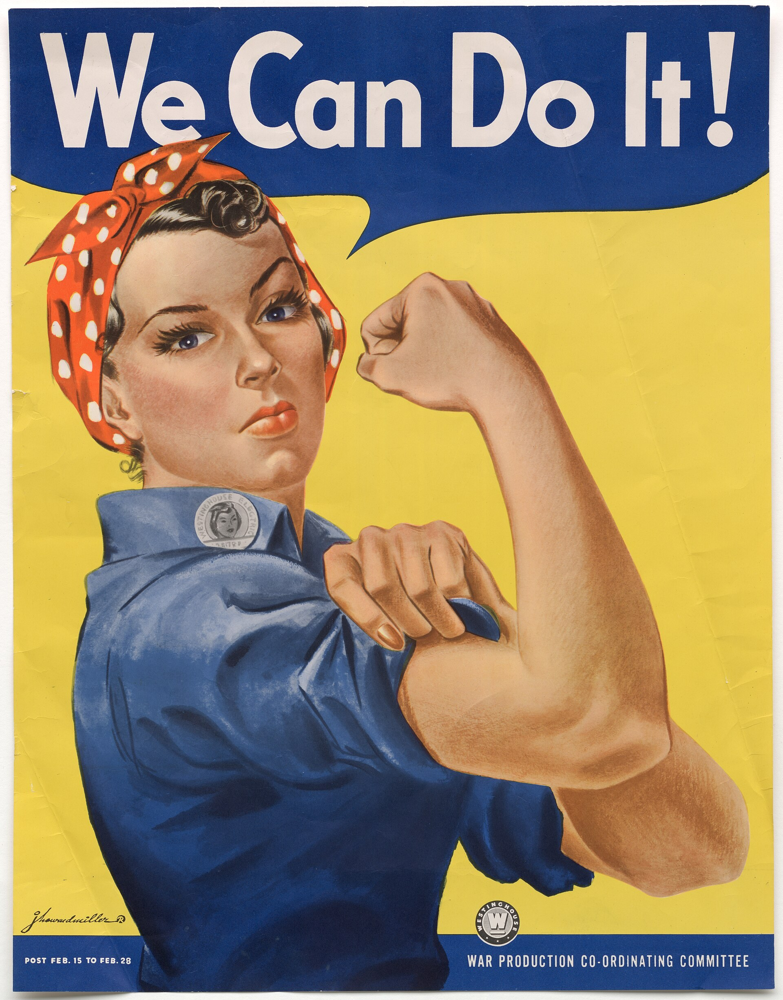

Directions: Read the background, study the poster, then answer the questions.
Background. The poster below was designed by J. Howard Miller in 1943 for the Westinghouse Electric company and displayed inside its own plants, aimed at its women factory workers. A woman in a red and white polka dot bandana and a blue work shirt rolls up her sleeve and flexes her arm beneath the words We Can Do It. The poster was seen briefly in Westinghouse factories and largely forgotten after the war, then rediscovered decades later and made into the most familiar image of women war work, popularly tied to the name Rosie the Riveter. About six million women entered paid work during the war years, many in shipyards and aircraft plants. Source: audited record for the poster, J. Howard Miller, We Can Do It, 1943, National Archives, RG 179.

1. Source the poster. Who designed it, in what year, for what audience, and where was it displayed?
2. Read the image closely. Who is the we in the slogan, and what in the woman's clothing and action tells you so?
3. Place the poster in the mobilization. What labor problem of 1943 does it answer, and which figure from the reading measures the size of that answer?
4. The poster was largely forgotten after the war and rediscovered decades later. What does that history warn a historian about using this poster as evidence of what women workers saw in 1943?
1. Source the poster. J. Howard Miller designed it in 1943 for Westinghouse Electric. Its audience was the company's own women factory workers, and it was displayed inside Westinghouse plants. It was a company morale poster, not a government campaign poster. (Blueprint 6)
2. Read the image closely. The we is the women war workers the poster addresses, and by extension the workforce they were joining. The blue work shirt, the rolled sleeve, the bandana worn for factory work, and the flexed arm all present a factory worker rather than a soldier or a homemaker, so the slogan claims factory work as the viewer's own capable act. (Blueprint 6)
3. Place the poster in the mobilization. The draft had taken millions of men into uniform while war orders kept rising, so industry needed workers it had previously closed its trades to. The poster answered by recruiting women into plant work. The reading figure is about six million women entering paid work during the war years. (Blueprint 5)
4. Use the poster as evidence with care. Because the poster hung briefly inside one company's plants and was largely forgotten until decades later, its present fame cannot prove that most women workers of 1943 saw it, were recruited by it, or took it as their symbol. A historian needs company display records or workers' own accounts alongside the poster before claiming how it was received at the time. (Blueprint 6)
Teacher note. This check is formative. Question 3 is the mobilization diagnostic. A student who cannot connect the poster to the draft and the six million figure has the image without the lesson, and should redo sections A and E of the guided notes before the writing task.